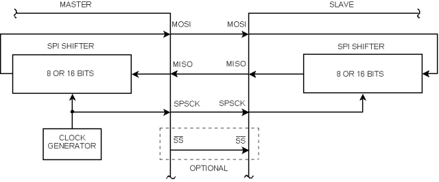

| SynchroSlave | |
|
|

This component (in cooperation with SynchroMaster) implements a serial synchronous master-slave communication. Only two devices can communicate - one of them is a MASTER and the other one is a SLAVE.

- SPSCK — Serial Clock (output from master)
- MOSI/SIMO — Master Output, Slave Input (output from master)
- MISO/SOMI — Master Input, Slave Output (output from slave)
- SS — Slave Select (active low; output from master)
- SCLK, SCK, CLK — Serial Clock (output from master)
- SDI, DI, SI — Serial Data In
- SDO, DO, SO — Serial Data Out
- nCS, CS, nSS, STE — Chip Select, Slave Transmit Enable (active low; output from master)
The difference between the master and slave is that the master generates the clock signal while the slave receives it. Consequently, if the master has no data to send to slave and needs receive data from the slave, it still has to transmit a character. For example a reserved character called "empty character" that may be ignored by slave (see properties Empty character and Ignore empty char.).
That also applies vice versa - if the slave has no data, it sends an empty character to the master. When the device is initialized or enabled (initialized by Enable method) and Interrupt service property is enabled, the empty character is saved in the output buffer of the device, i.e. the slave device sends the empty character as the first character after initialization of the device. This mechanism is not supported in polling mode (Interrupt service property is disabled) and the user code must ensure saving of the empty character into output buffer.
The type of the user type ComponentName_TComData is a byte if the number of information bits (Width property) is less than or equal to 8. If the number of information bits is greater than 8, the type of the user type ComponentName_TComData is a word.
SW overrun behavior
- If the poling mode is used already received data will not be lost.
- If the interrupt mode is used and data buffer (Input buffer size property) is greater than 0 then already received data will not be lost, too.
- But if the interrupt mode is used and data buffer (Input buffer size property) is equal to 0 new data replace the older one.
Configuring Clock edge and Shift clock idle polarity properties
The pictures below show posible settings and their influence on the SPI communication operation.
The Clock edge property defines edge on which new logical value of data is moved to line, this edge is in pictures marked by red point.
If Clock edge is set to Falling edge and Shift clock idle polarity is set to Low or Clock edge is set to Rising edge and Shift clock idle polarity is set to High (picture 3 and 4; CPHA = 0),
the first data bit transfer to line starts with falling edge on the SS line, in picture marked by green point. In this case the SS connection is demanded.
In other two cases (picture 1 and 2; CPHA = 1) the first data bit transfer to line starts with first edge on the CLK line.
If the target architecture uses CPOL (Clock polarity) and CPHA (Clock phase) bits, you can find the corresponding values in the pictures.
Bidirectional mode behavior
The picture below show the SynchroSlave HW inner interconnection in the normal (two wires are used for communication) and bidirectional mode (one wire communication).
In the bidirectional mode:
-
If the user choose the Output direction of the pin, so the data from Serial Out go to the SISO pin and also to the Serial In.
In this case transmitted data are also received, so if there is the OnTxChar event enabled it's invoked together with the OnRxChar event if it's enabled.
-
If the user choose the Input direction of the pin, so the data from the SISO pin go to the Serial In.
In this case transmitted data are shifted out from periphery (Serial Out) however the output is not connected to the pin so the output data are discarded and data from the pin are received.
So if there is the OnTxChar event enabled it's invoked together with the OnRxChar event if it's enabled.
Consequently the direction hasn't effect on the OnTxChar event or the OnRxChar event.
The behavior in the normal mode is obvious.